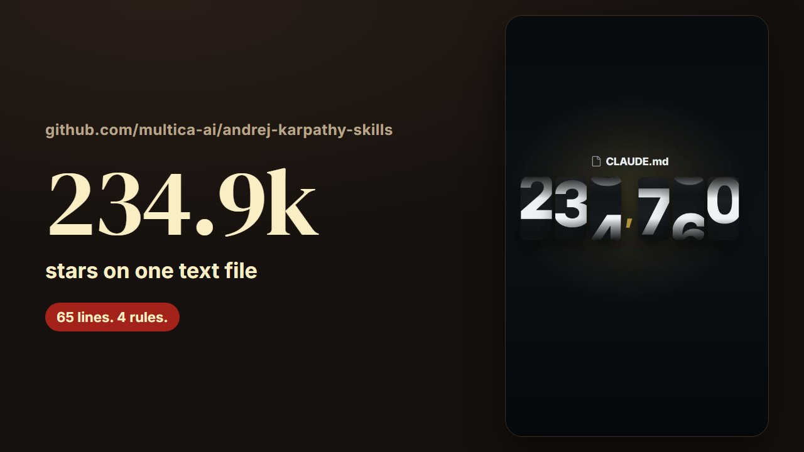

234,000 stars on one text file
A single CLAUDE.md built from Andrej Karpathy's observations on how AI coding goes wrong. It wasn't written by him; it's 65 lines of rules Claude follows every session. Free, MIT.
The reel this guide comes from.
Install it (pick one)
As a plugin (all projects)
/plugin marketplace add multica-ai/andrej-karpathy-skills /plugin install andrej-karpathy-skills@karpathy-skills
Into one project
curl -o CLAUDE.md https://raw.githubusercontent.com/multica-ai/andrej-karpathy-skills/main/CLAUDE.md
Add to an existing CLAUDE.md
curl https://raw.githubusercontent.com/multica-ai/andrej-karpathy-skills/main/CLAUDE.md >> CLAUDE.md
The rules make Claude code better. Your content needs rules too.
These 65 lines stop Claude from overbuilding. My videos run on rules like that: a hook in the first two seconds, a payoff before people leave, one idea per reel. They live in the system that runs my content every day, even the DM that sent you here. Under a minute:
Under a minute, sound on. The presenter is my AI clone, made with the methods taught inside.
Join AI Virality Creators →$9/month until the group reaches 150 members, then $27/month. The price you join at stays yours.
What you get inside
A path for complete beginners
START HERE takes you from zero to your first consistent AI character, lesson by lesson. Then Go Viral: 8 short lessons and cheat sheets for Reels and TikTok.
Every reel I post, taken apart
The prompts, the edit choices and what each shot cost in credits. You copy what already worked instead of guessing.
Claude Code, in plain English
Master Claude Code: real builds with every file included. Claude writes the code; you say what you want and approve each step.
30+ courses on today's tools
Kling 3.0, Veo 3.1, Nano Banana Pro, ElevenLabs voices, UGC and cinematic ads, prompt systems, 4K upscaling.
Feedback from me
Post your video in the community. I read it and reply myself, and other members add their notes.
From skill to client work
Modules on finding your first clients, pricing what you make and delivering it like a pro.
Your first week
- Day 1. Join, introduce yourself and say what you want to make. I point you to the module that fits.
- Days 2–4. Build your first AI character in START HERE, one short lesson a night. (Here for Claude Code? Start Master Claude Code instead.)
- Days 5–6. Open a reel breakdown and copy its structure for your own idea.
- Day 7. Post your first video in the community and get feedback on it.
Stop saving tutorials. Start posting.
AI Virality Creators is my Skool community. Everything above is in one place, in order, and I answer you myself.
- Go Viral: 8 short lessons and cheat sheets, the rulebook for Reels and TikTok.
- Master Claude Code: real builds with every file included, CLAUDE.md files too.
- 30+ step-by-step courses and the breakdown of every reel, with prompts and credit costs.
- Personal feedback on what you post, next to 125+ creators building the same skills.
$9/month until the group reaches 150 members, then $27/month. The price you join at stays yours.
Before you join
I'm a complete beginner. Is this too advanced?
Not at all. START HERE assumes zero experience and goes in order: your first image, your first video, then a character that looks the same in every shot. If you can type a sentence, you can follow it.
I can't code. Do I need to?
You don't need to. For the Claude Code lessons you describe what you want in plain English, Claude writes the code, and you approve each step. Every lesson shows the exact clicks.
Do I need a Skool account? Can I use it on my phone?
Skool is the app the community lives in. Signing up is free and takes about a minute when you join, and it works in the Skool phone app or any browser. Watching lessons and posting work fine on a phone; Claude Code itself runs on a computer.
I don't have much time.
The lessons are short and numbered, so you always know which one is next. One lesson an evening keeps you moving, and the community keeps you posting.
Can't I learn all of this free on YouTube?
You can start there, and free guides like this one are made for exactly that. What you won't find for free: the right order, my real project files, the credit cost of every shot, and someone who looks at your video and tells you what to fix.
AI tools change every month. Won't it be outdated?
New tools get their own modules: Kling 3.0, Veo 3.1 and Nano Banana Pro are already in. The breakdowns teach how a reel is built, and that carries over to whatever tool comes next.
AI credits get expensive. What will I spend?
Every breakdown shows what each shot cost, so you know before you start. A lot of what I teach costs 0 credits, like the guide you're reading now.
Will I get lost in a big group?
It's around 125 people, small enough that new posts get answered. I reply myself, and members comment on each other's work.
Is the person in the video real?
The presenter is my AI clone, built with the same methods taught inside. I say so every time. The community is run by me, and I answer you myself.
Will this make me money?
I can't promise income. You get the skill, finished videos to show, and modules on finding clients and pricing your work. What you earn with them is up to you.
Is it only about video?
Video is the core. Master Claude Code is the second part: real builds with every file included, starting with the Night Shift experiment. Prompting, voices and client work are in there too.
What if it's not for me?
Cancel anytime in your Skool settings. You also have the guarantee: publish your first AI video within 30 days of joining, and if you can't, message me for a refund. The full terms are on the About page.
$9/month until the group reaches 150 members, then $27/month. The price you join at stays yours.
The 4 rules
- Think Before Coding: “Don't assume. Don't hide confusion. Surface tradeoffs.”
- Simplicity First: “If you write 200 lines and it could be 50, rewrite it.”
- Surgical Changes: “Every changed line should trace directly to the user's request.”
- Goal-Driven Execution: “Define success criteria. Loop until verified.”
The whole file
MIT-licensed, reproduced with credit.
# CLAUDE.md
Behavioral guidelines to reduce common LLM coding mistakes. Merge with project-specific instructions as needed.
**Tradeoff:** These guidelines bias toward caution over speed. For trivial tasks, use judgment.
## 1. Think Before Coding
**Don't assume. Don't hide confusion. Surface tradeoffs.**
Before implementing:
- State your assumptions explicitly. If uncertain, ask.
- If multiple interpretations exist, present them - don't pick silently.
- If a simpler approach exists, say so. Push back when warranted.
- If something is unclear, stop. Name what's confusing. Ask.
## 2. Simplicity First
**Minimum code that solves the problem. Nothing speculative.**
- No features beyond what was asked.
- No abstractions for single-use code.
- No "flexibility" or "configurability" that wasn't requested.
- No error handling for impossible scenarios.
- If you write 200 lines and it could be 50, rewrite it.
Ask yourself: "Would a senior engineer say this is overcomplicated?" If yes, simplify.
## 3. Surgical Changes
**Touch only what you must. Clean up only your own mess.**
When editing existing code:
- Don't "improve" adjacent code, comments, or formatting.
- Don't refactor things that aren't broken.
- Match existing style, even if you'd do it differently.
- If you notice unrelated dead code, mention it - don't delete it.
When your changes create orphans:
- Remove imports/variables/functions that YOUR changes made unused.
- Don't remove pre-existing dead code unless asked.
The test: Every changed line should trace directly to the user's request.
## 4. Goal-Driven Execution
**Define success criteria. Loop until verified.**
Transform tasks into verifiable goals:
- "Add validation" → "Write tests for invalid inputs, then make them pass"
- "Fix the bug" → "Write a test that reproduces it, then make it pass"
- "Refactor X" → "Ensure tests pass before and after"
For multi-step tasks, state a brief plan:
```
1. [Step] → verify: [check]
2. [Step] → verify: [check]
3. [Step] → verify: [check]
```
Strong success criteria let you loop independently. Weak criteria ("make it work") require constant clarification.
---
**These guidelines are working if:** fewer unnecessary changes in diffs, fewer rewrites due to overcomplication, and clarifying questions come before implementation rather than after mistakes.
Credit: the CLAUDE.md is from multica-ai (originally forrestchang), MIT license. Source: github.com/multica-ai/andrej-karpathy-skills. It is derived from Karpathy's post, not written by him. I'm not affiliated with the author.